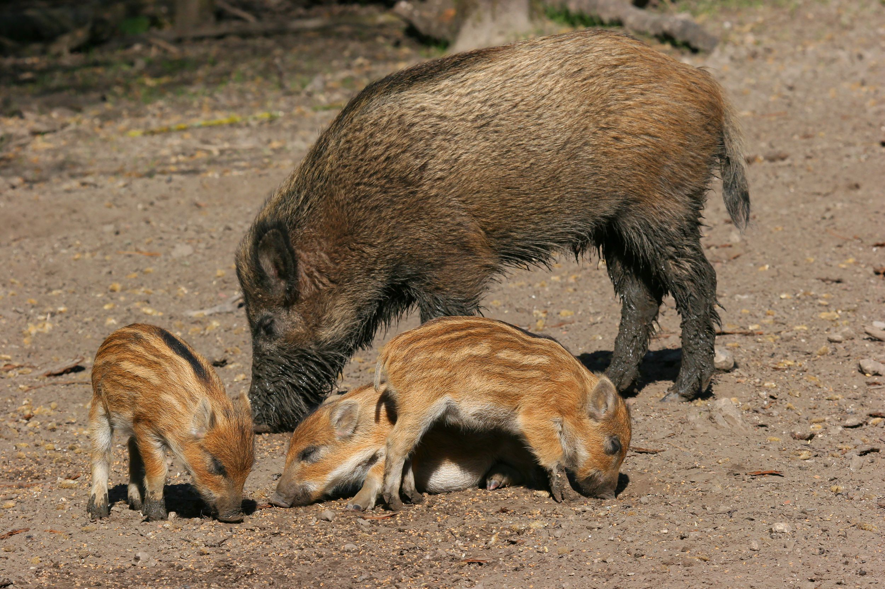

O javali foi introduzido no Brasil por volta da década de 1960, principalmente devido ao interesse na criação comercial de sua carne, com as primeiras populações a se estabelecerem na região Sul, através das fronteiras com a Argentina e Uruguai. Devido à falta de predadores naturais, facilidade de adaptação, reprodução descontrolada e a mistura com porcos domésticos (formando o javaporco), a espécie se espalhou, tornando-se uma praga que causa impactos ambientais e prejuízos à agricultura. Origem da Introdução Interesse comercial: Os javalis foram trazidos da Europa, Ásia e Norte da África para o Brasil e a América do Sul em geral, com o intuito de promover a criação para o consumo de carne exótica. Chegada no Brasil: As primeiras espécies chegaram ao Brasil a partir da década de 1960, infiltrando-se principalmente através da região Sul do país. Dispersão por meio da fronteira: A invasão inicial foi facilitada pela fronteira com a Argentina, onde o javali já havia sido introduzido no início do século XX para prática de caça esportiva. Espalhamento e Problemas Fuga e soltura: A fuga de animais de criadouros e a soltura intencional por parte de criadores levaram ao estabelecimento de populações livres na natureza. Ausência de predadores: No Brasil, ao contrário da Europa, não existem predadores naturais para o javali, o que permite sua reprodução sem controle. Criação de javaporcos: O cruzamento entre o javali e o porco doméstico resultou no javaporco, um animal híbrido, mais rústico, violento e com capacidade de reprodução rápida. Consequências: O javali se tornou uma praga, causando danos a lavouras, à flora nativa e aos animais domésticos, além de prejudicar o meio ambiente ao assorear rios e atacar animais nativos. Os javalis causam no Brasil danos ambientais significativos, como erosão do solo, assoreamento de rios e destruição de plantas nativas, e prejuízos econômicos às lavouras, principalmente de milho e soja. Além disso, representam um risco à saúde pública, pois transmitem doenças como raiva e leptospirose, e impactam a fauna nativa, competindo por recursos e transmitindo enfermidades. Impactos Ambientais Alteração do solo e erosão: O hábito do javali de chafurdar e revirar o solo causa erosão, assoreamento de rios e nascentes, afetando a qualidade da água. Destruição da flora: As plantas nativas são danificadas pela alimentação e pela pisoteação dos javalis, o que pode levar à extinção de espécies locais. Ameaça à biodiversidade: A espécie entra em competição com a fauna nativa por recursos e território, e pode danificar ninhos e habitats de outros animais. Impactos Econômicos Destruição de lavouras: Os javalis destroem plantações, como milho, soja e trigo, causando prejuízos a agricultores e afetando a segurança alimentar. Ameaça à pecuária: Há riscos de transmissão de doenças para rebanhos, o que pode ter um impacto econômico de bilhões de reais, além de perdas diretas de animais domésticos. Impactos na Saúde Pública e Fauna Transmissão de doenças: Javalis podem disseminar zoonoses (doenças que afetam humanos e animais), como febre maculosa, raiva e leptospirose, por meio da carne e carcaças contaminadas. Riscos sanitários: A presença de javalis intensifica o contato com carrapatos, vetores dessas doenças, aumentando o risco de contaminação em áreas rurais e de lazer. Conflitos com a fauna nativa: Os javalis podem ser confundidos com animais nativos, como catetos e queixadas, o que agrava a competição por recursos e a disseminação de doenças entre espécies. como javali aumentou tanto Alta capacidade reprodutiva: Fêmeas de javalis e javaporcos podem ter múltiplas gestações por ano, o que contribui para a rápida multiplicação da espécie. Cruzamento com porcos domésticos: O cruzamento com porcos domésticos resulta no "javaporco", um animal mais prolífero e com maior facilidade de ganho de peso. Falta de predadores naturais: A ausência de predadores como lobos-cinzentos e onças facilita o crescimento descontrolado da população. Ambiente favorável: Lavoura de milho, soja e outras culturas fornecem abundância de alimento e água, criando um ambiente ideal para a proliferação dos javalis. Porque javali faz tanto mal e o porco nativo não O javali faz mal porque é uma espécie selvagem, exótica e invasora no Brasil, sem predadores naturais, que causa danos ambientais, destrói lavouras e pode transmitir doenças para o gado e humanos. Por outro lado, o "porco nativo" é uma designação que, no Brasil, se refere a animais como o cateto e a queixada (que são de fato nativos e pecarídeos) ou ao porco doméstico, que tem seu comportamento controlado pelo homem e é domesticado. Diferenças chave: Origem: O javali é exótico, nativo da Europa, Ásia e Norte da África, mas no Brasil é uma espécie invasora. Os "porcos nativos" no Brasil são os pecarídeos como o cateto e a queixada, que não são porcos, ou o porco doméstico descendente do javali europeu. Comportamento: O javali é um animal selvagem, agressivo e com instintos de vida livre, enquanto o porco doméstico foi domesticado e tem seu comportamento moldado pela criação humana. Impacto Ambiental: O javali causa danos ambientais, destruindo matas, pastagens e lavouras, além de prejudicar a regeneração da vegetação nativa. Os pecarídeos brasileiros, embora selvagens, não são considerados uma praga invasora da mesma forma. Doenças:
hello wordQue bom te ver por aqui
id= nome usuario >fulano

